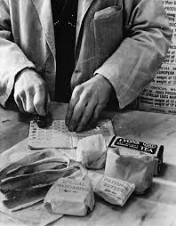
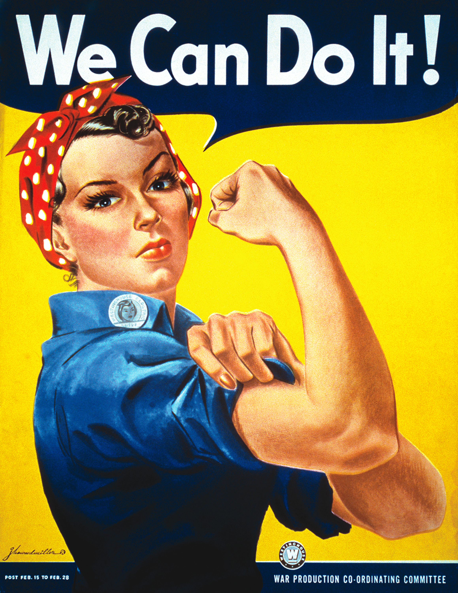
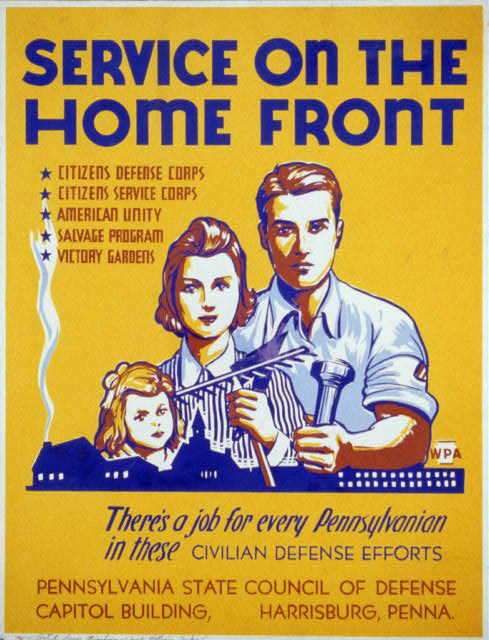
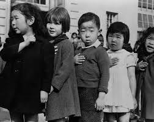

Page 4: WWII on the Homefront
Essential Question: What was the impact of WWII on the people living on the homefront?
Answer to the Essential Question
World War II affected people on the homefront by turning entire societies into parts of the war effort.
Governments controlled resources, increased factory production, used propaganda to shape public opinion,
and expected civilians to sacrifice comfort for victory.
Life on the homefront also changed through rationing, censorship, military drafts, and the expansion of women's roles in the workforce.
At the same time, the war caused serious losses of civil liberties, including the internment of Japanese Americans in the United States.
These changes show that WWII deeply transformed everyday life.
Major Changes on the Homefront
- Total war mobilized the entire population.
- Rationing limited consumer goods to support the military.
- Propaganda encouraged unity, production, and sacrifice.
- Censorship restricted information during wartime.
Social Effects
- The draft pulled millions into military service.
- Women entered factories and defense jobs in larger numbers.
- Governments controlled everyday life more directly.
- Some groups lost civil liberties during the war.
Artifacts

Artifact 1
Ration Books and Wartime Sacrifice
This artifact shows how civilians had to live with rationing during World War II.
Goods such as sugar, meat, gasoline, and rubber were limited so more resources could go to soldiers and military production.
Source

Artifact 2
Women on the Homefront
The famous Rosie the Riveter image represents the expanding role of women during the war.
As men left for military service, women worked in factories, shipyards, and other defense industries.
Source

Artifact 3
Propaganda and Public Opinion
Governments used propaganda to encourage enlistment, factory work, loyalty, and conservation.
Posters, radio messages, and films tried to unite people around the war effort.
Source

Artifact 4
Japanese American Internment and Loss of Civil Liberties
This artifact shows one of the most serious homefront injustices in the United States during WWII.
Japanese Americans were forced from their homes and placed in internment camps.
Source
How WWII Changed Civilian Life
| Topic |
Impact on the Homefront |
| Total War |
Governments organized industry, labor, and daily life around winning the war. |
| Rationing |
Families had to limit use of food, gasoline, metal, and rubber so supplies could support the military. |
| Propaganda |
Posters and media encouraged patriotism, sacrifice, silence, and support for war production. |
| Censorship |
Governments restricted sensitive information to protect military plans and morale. |
| The Draft |
Millions of men were called into military service, changing families and workplaces at home. |
| Women |
Women entered jobs once closed to them and became vital to defense production. |
| Civil Liberties |
Some groups, especially Japanese Americans, experienced discrimination and loss of rights during the war. |